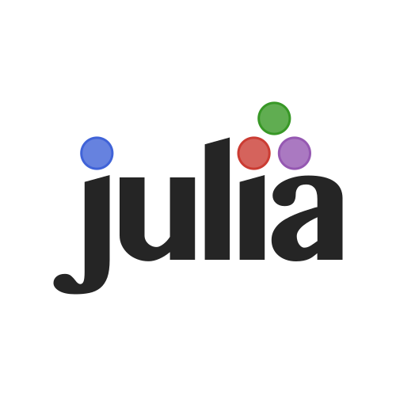
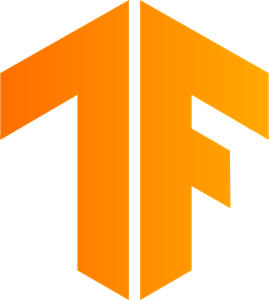

Tecnologías
Lenguajes de Programación
Python

Logo de Python
Python es un lenguaje sencillo de leer y escribir debido a su alta similitud con el lenguaje humano. Se trata de un lenguaje multiplataforma de código abierto y, por lo tanto, gratuito, lo que permite desarrollar software de casi cualquier tipo. Python ha ido ganando adeptos gracias a su sencillez y a sus amplias posibilidades, sobre todo en los últimos años, debido a su sencillez para trabajar con inteligencia artificial, machine learning, data science, y computación científica en general.
Julia
Logo de Julia
El lenguaje de programación Julia ha sido diseñado para disponer de las ventajas de un lenguaje dinámico con el rendimiento de un lenguaje compilado. Julia dispone de un compilador avanzado, mecanismos para la ejecución en paralelo y distribuida y, además, cuenta con una completa biblioteca de funciones matemáticas, haciéndolo ideal para el Machine Learning.
Librerías más utilizadas
TensorFlow
Logo de TensorFlow
TensorFlow es una biblioteca de código abierto para Machine Learning a través
de un rango de tareas, y desarrollado por Google para satisfacer sus necesidades de sistemas
capaces de construir y entrenar redes neuronales para detectar y descifrar patrones y
correlaciones, análogos al aprendizaje y razonamiento usados por los humanos.
Está disponible para Python y Julia.
Scikit-Learn

Logo de Scitkit-Learn
Es una biblioteca para aprendizaje automático en software libre.
Incluye varios algoritmos de clasificación, regresión y análisis de grupos
entre los cuales están máquinas de vectores de soporte, bosques aleatorios, Gradient boosting,
K-means y DBSCAN.
Está disponible para Python y Julia.